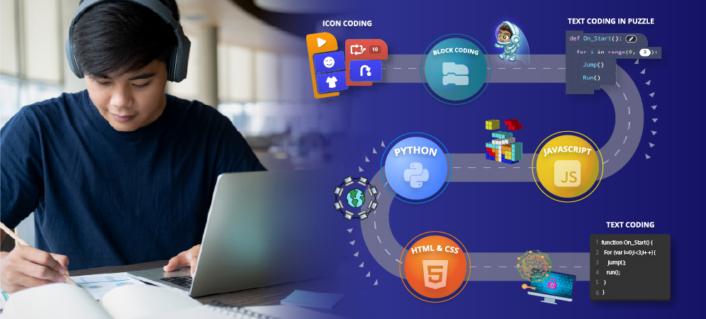

Most of people that want to learn fast is by watching tutorials or youtube. For me, i highly recommended do not do that, unless it is emergency that you require to finish the project or the program in short of amount time. For the rest of that, you can follow what i do (this is for suggestion, you can take it or leave it).
As you can see, coding is more like mathematic. It's more logical than memorize things. What you need to do is more to the practice, the more action you do, the better your understanding of what language you study. For example, in case you learning from youtube and tutorials, you follow it step by step and eventually you got what you want. And... that's it, nothing more and there's no more goals. The downside of this, it is you will only learn one simple application, that only can be used if the case is same. If the case change little bit, there's a higher chance you will not understand how to solve, and improvised with your code.
In other hand, if you learning by reading some documentation and follow up your tutorial video, it will be much different. By doing so, you will be curious about some other things that in tutorial not taught. For example, in the video is about javascript DOM which is have a lot of syntax and method in it. Since you learning too outside of it, you wondering about DOM in other side of hand, you actually find something short or there's a shortcut code rather than in video. In the end of it, you eventually will learn by yourself and not watching some tutorial anymore, you will get used to individually code yourself and find the solution by practice. This is the best way to start your coding and be adaptive to it. There's no problem with watching some youtube tutorials, it is very fine, but don't get in the hole too deep.
You feel there's nothing more that i can do to learn or expand things in my code. I am stuck to improve and confused where i need to go since there's many framework or library or even language that i've already seen but it's not what i wanted. In this case, you probably easily statisfied and not engage any challenge that many many competition out there held every years.

If you feel like that one before, don't be. Because what you learn in college, school or tutorials is only small part of big coding you only see. There's lot of talented out there and they still curious and hungry about their knowledge about code. They know where to learn their gap of knowledge. In here i will share some information that might give the insight about what we can do if we reach our level 1 learning basic code in language that you currently study.
First of all, learning in college, school, or youtube is very small compare to the big one. There's a lot of hackathon, competition, and logical algorithm that being held over a years. It is about competition about around world or local to be the best among the best code player. Usually the competition held only for student that currently enroll, and there's a top their that held for general (student and worker) which is there will be profesional that already know or the master that answer in stack overflow. What i want to say is, engage this kind of things, there's lot to explore out there, we can start by challenge ourself to do better than our previous version. And of course don't just joining the event, but you need to practice, practice, and practice. World has changed now, any information now is easily to get, so why don't you improve yourself before other take your place!
Lastly, i want to share more about tips that can help you learn or improving yourself. You can pick one or more or leave it since this is only my tips that can be hopefully help yourself to get through to learn coding.
So, what you need to do is go learn some "Clean Code" that you can read in online or purchase one for yourself. This book really help me and others to maintain their to be good, neat, and ready to be approved in production without single scratch. This book give you insight about how to name your variabel, or class, or function that many people can understand whoever read your program. Not only that, there's more into it, about more understanding of your program environment, how to use third party tools like library outside of your framework use, etc. This book have a lot of pages that can be use as reference and it is up to us to use this as our guidance or not. For myself, i only took some of it and the rest is kinda more about feeling to use it or not, because eventually code/program is like a writer, it's expression from your mind into program.
Lastly, if you want to make sure you got what you need. There's many documentation in every language. For example in react, you can access it's documentation in their official website, not only in react website, w3school there help you for more about the syntax, and how to use it. And there's community that can help you solve the problem and we already know it, stackoverflow. So, don't get yourself doubt, internet there will help you. So, happy coding~